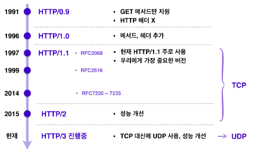
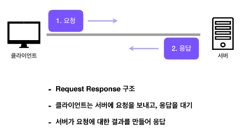
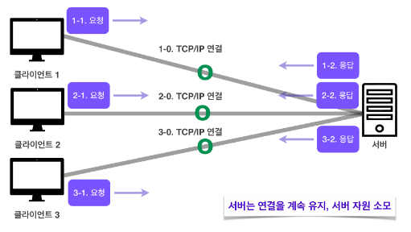
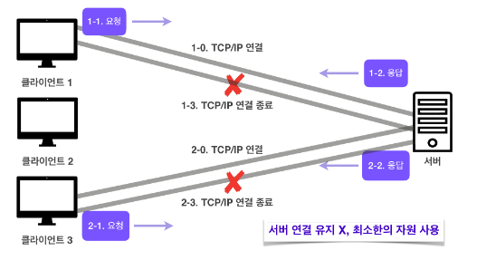
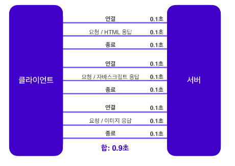
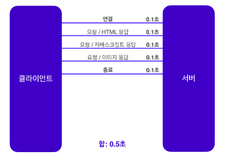

HTTP/1.1, HTTP/2는 TCP 기반이며 HTTP/3는 UDP 기반 프로토콜이다.
HTTP의 특징은 다음과 같은 특징이 있다.
클라이언트가 서버에 요청을 보내면 서버는 그에 대한 응답을 보내는 클라이언트 서버 구조로 이루어져 있다.

HTTP는 서버가 클라이언트의 상태를 보존하지 않는 무상태 프로토콜이다.
무상태는 응답 서버를 쉽게 바꿀 수 있기 때문에 무한한 서버 증설이 가능하다.
로그인이 필요 없는 단순한 서비스 소개 화면 같은 경우엔 무상태로 설계할 수 있지만 로그인이 필요한 서비스라면 유저의 상태를 유지해야 되기 때문에 브라우저 쿠키, 서버 세션, 토큰 등을 이용해 상태를 유지한다.

TCP/IP의 경우 기본적으로 연결을 유지하여 요청을 보내지 않더라도 계속 연결을 유지해야 한다.
이러한 경우 연결을 유지하는 서버의 자원이 계속 소모가 된다.
HTTP 1.0 기준으로 HTTP는 연결을 유지하지 않는 모델이다.

비연결성을 가지는 HTTP에서는 실제로 요청을 주고받을 때만 연결을 유지하고 응답을 주고 나면 TCP/IP 연결을 끊는다.
이를 통해 최소한의 자원으로 서버 유지를 가능하게 한다.
트래픽이 많지 않고 빠른 응답을 제공할 수 있는 경우 비연결성의 특징은 효율적으로 작동한다.
하지만 트래픽이 많고 큰 규모의 서비스를 운영할 때에는 비연결성은 한계를 보인다.
자원들을 보낼 때마다 연결을 끊고 다시 연결하고를 반복하는 것은 비효율적이기 때문에 지금은 HTTP 지속 연결(Persistent Connections)로 문제를 해결한다.
HTTP 초기에는 각각의 자원을 다운로드하기 위해 연결과 종료를 반복해야 했다.

HTTP 지속 연결에서는 연결이 이루어지고 난 뒤 각각의 자원들을 요청하고 모든 자원에 대한 응답이 돌아온 후에 연결을 종료한다.
